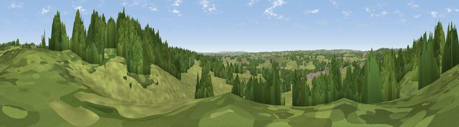

Viewpoint near Upper Tean
#39554 in England · top 80% of its area beats it · near Upper TeanWhere it is
The exact computed spot (SK 02325 39925). Click the marker for map links.
The view, rendered

A 360° render of this exact spot computed from the terrain model, tree cover and land cover — summer colours, afternoon light, calibrated against photographs of famous viewpoints. Real trees, hedges and buildings will differ in detail.
The panorama
Grey silhouette: terrain skyline in each direction (720 bearings, Earth curvature and refraction included). Dashed green: skyline with trees (+15 m) and buildings (+8 m) as obstacles. Blue strip: how far the ground is visible on each bearing.
Where the view opens
Wedge length = distance to the farthest visible ground on that bearing (vegetation-aware). Rings at 10, 25 and 50 km.
What fills the view
56% grassland · 41% woodland · 2% built-up · 1% cropland
Angular shares of the visible panorama (visual magnitude), not map area. Landscape diversity 0.36 (0–1 Shannon).
Key numbers
More beautiful places nearby
The staircase of upgrades: each row has a higher view potential than everything closer. Driving times are estimates from straight-line distance, calibrated against real road routing — check an actual route before setting out.
| Place | Direction | Drive | Score |
|---|---|---|---|
| Viewpoint near Lower Tean | E · 0 km | ~1 min | 45.5 |
| Viewpoint near Checkley | E · 1 km | ~4 min | 46.1 |
| Viewpoint near Cheadle | NNE · 3 km | ~7 min | 61.0 |
| Viewpoint near Oakamoor | NE · 6 km | ~14 min | 62.9 |
| Viewpoint near Cauldon Lowe | NE · 10 km | ~19 min | 71.9 |
| Viewpoint near Wootton | NE · 10 km | ~19 min | 74.8 |
| Tissington Hill | NE · 18 km | ~31 min | 75.5 |
| Viewpoint near Mow Cop | NW · 24 km | ~39 min | 80.2 |
52.95669, -1.96684 · source: screening · position refined by local search. Computed location — check access rights before visiting.